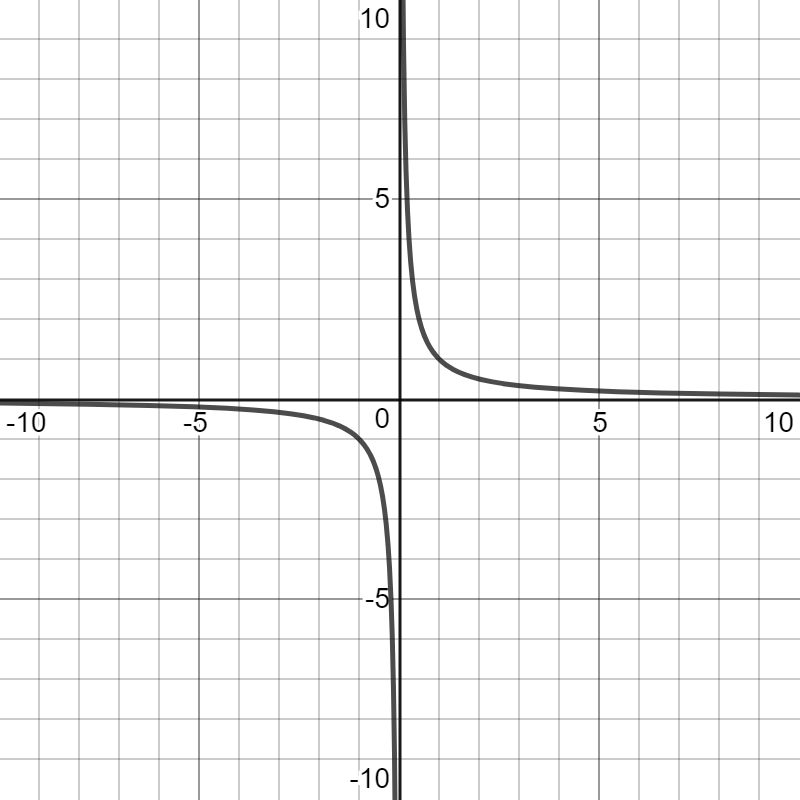
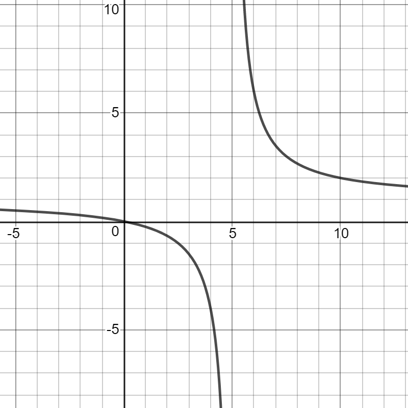
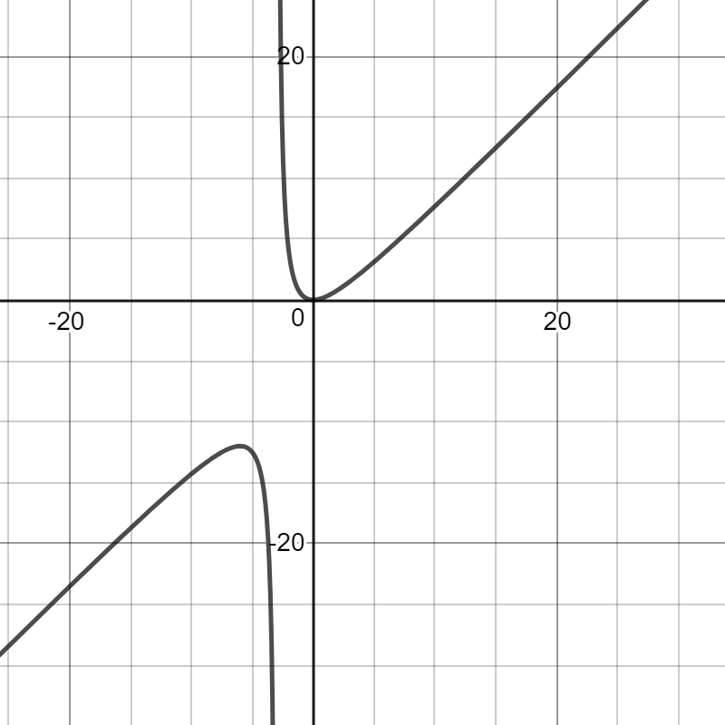
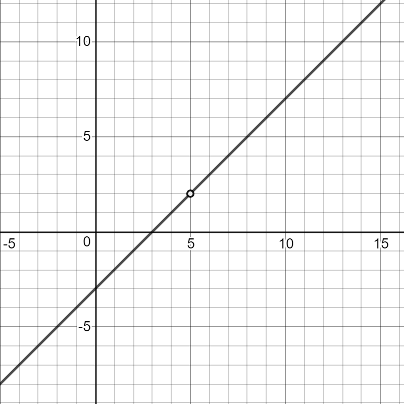

Rational Functions
1. What are Rational Functions?
Rational functions are functions that are the quotient, or ratio, of two polynomial functions.
2. Characteristics
2.1. Vertical Asymptotes
Vertical asymptotes are values of x that results in an undefined point of a rational function. Values of x are unable to cross these values.

This graph has a vertical asymptote at x = 0, because it is unable to have an x-value at 0.
Undefined functions are those that have 0 as their denominator. They can be solved by finding for all values of x in the denominator.
If we're finding the vertical asymptotes, we must solve for all >x values in the denominator. We can do so by factoring x2 - 6x + 5.
x2 - 6x + 5
= (x - 5)(x - 1)
Our vertical asymptotes are x = 1, 5.
2.2. Horizontal Asymptotes
Just like vertical asymptotes, horizontal asymptotes are points where y-values are unable to cross.
This graph has a horizontal asymptote at y = 4.
If the degree of the numerator polynomial is lower than the degree of the denominator polynomial, the horizontal asymptote is at y = 0. If the degree is the same in both the numerator and the denominator polynomial, to find the horizontal asymptote you divide the coefficients of the terms with that degree. If the degree of the numerator is higher than the one in the denominator there is no horizontal asymptote.
First we need to check how we're going to find the vertical asymptotes.
The highest-power term in the numerator is 2x2 and in the denominator it's x2. As they're the same power, we need to divide their coefficients.
Our horizontal asymptote is y = 2.
2.3. Oblique Asymptotes
Oblique asymptotes, also known as slanted asymptotes, are asymptotes represented by a linear line of y = mx + b.
This graph has an oblique asymptote at y = x - 3.
If the numerator polynomial degree is greater than the one of the denominator, an oblique asymptote exists. To find oblique asymptotes, you need to divide the two polynomials. The polynomial answer you get (not the remainder) is your oblique asymptote.
2.4. Holes
Holes in a function are points where both x and y can't be that value. They are not asymptotes.
This graph has a hole at x = 5.
To tell if your function will have a hole, check for values of x that make zero in both the denominator and the numerator.
To find x, we factor the polynomials in both the numerator and the denominator.
x2 - 3x + 2
= (x - 2)(x - 1)
x = 1, 2 for the numerator.
(x - 1)
x = 1 for the denominator.
(x - 1) is a common factor for both the numerator and the denominator, so we have a hole at x = 1.
2.5. Zeros
Zeros, also called roots, of rational functions are where y = 0 and the graph intersects the x-axis. To solve for roots set the numerator to 0 and solve for x.
Y-intercepts are when x = 0 and the graph crosses the y-axis. To solve for a graph's y-intercept, substitute 0 for x in the function and solve for y.